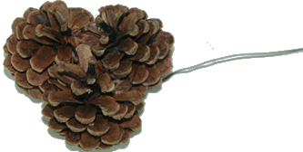
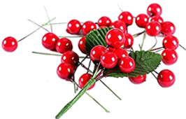

Decorating a Classic, Rustic Holiday Wreath
The combination of balsam fir, pinecones, red berries, and a handcrafted bow will create a festive Christmas decoration that celebrates the natural beauty of the holiday season.
Once you have made the one-sided balsam fir wreath, make sure to shape, fluff, and fan out all of the fir branches evenly so the fir's natural fullness can show through and frame the decorations that you add.
Arrange the pinecones in a way that feels balanced not necessarily symmetrical. You can space them around the wreath or cluster them in groups of two or three pinecones wired together.
If you are using red berries, place them in strategic spots, focusing on the areas where you want to draw attention, or tuck them into gaps in the pine cones for a natural, scattered look.
You can make your bow using wire-edged ribbon, approximately 2 1/2" inches wide so it will stand out against the greenery. You may want to place the bow at the top of the wreath for a traditional look, or on the bottom or side for less conventional look. A simple, classic bow, with 8 to 10 loops, with the tails hanging down, is easy to make.
How to Make a
Pine Cone Cluster

- Cut a piece of wire approximately 18” long and fold in half.
- Twist the folded edge to form a ½” loop.
- Place two or three pinecones against the folded edge of the wire and wrap the two 9” pieces of wire around the scales of the pinecone until the wires meet in the front. Twist securely.
How to Build a
Red Berry Bunch

- Take three strands of red berries and fold in half.
- Wrap the wire from the floral stick securely around the folded stems.
Hint: You can simply wrap the berries aroud a tip the stem of a fir tip and twist if you do not have floral sticks.
Making an 8-Loop
Christmas Bow
- Cut 2 1/2 inch wired Christmas ribbon to about 5 yards.
- Create a loop in the center of the ribbon by folding it in half. This loop should be about 4-6 inches long, depending on how big you want the bow. Pinch the loop at the center with your fingers to hold it in place. This will be the center of your bow.